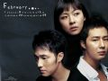
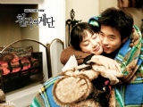

写给爱着韩剧的我们之韩剧典藏(199…
NO.6《夏娃的诱惑》
金素妍和蔡琳的成名作，也是张东健和韩在石继《天桥风云》之后的又一次合作，播出后引起极大的反响，所谓“好女人”与“坏女人”的争取幸福之战。
张东健饰演的尹理事，再一次成为完美情人的标准，没有了《天桥风云》中李政为达目的不择手段的野心，而多了让人欣赏的成熟稳重；韩在石在剧中则又一次成为远钧一样的悲剧性人物，最后为救徐迎美而死。
NO.7《巴里岛的故事》
新晋偶像苏志燮、赵寅成（赵仁成）和河智媛主演，该剧很大程度上脱离了韩国传统偶像剧的模式，最大程度上，以真实的手法与感触向观众表述一个穷富对立等级严格的社会中所发生的悲剧故事.
河智媛饰演的李水晶一直都很辛苦的在巴里岛做导游挣着钱，可有一天她辛苦挣的钱被人卷跑，她渴望过着有钱人的生活……
赵寅成饰演的正民是某集团的二公子，生活没有目标，整日无所事事，喝酒、玩女人似乎是他生活的全部……
苏志燮饰演的另一男主角是个有野心与目标的男人，一心想改变自己的生活，十分清楚社会等级的残酷性，这样的他却爱上了和他同在社会底层的李水晶……

NO.8《天堂阶梯》
该剧导演“天堂三部曲”的第二部（第一部是《美丽的日子》），权相佑、崔智友主演，明星姐弟金泰希、李莞凭该剧走红。
剧集内容很大程度上与《冬季恋歌》都有相似之处，但难能可贵的是，在人物的塑造与表演上该剧略胜一筹，尤其是权相佑塑造的男主人公，形象真实而不造作。

NO.9《对不起，我爱你》
该剧以车武赫悲惨的一生为主线：被亲生母亲并不是出于本意的遗弃，在抛弃自己的前女友的婚礼上为救其性命而头部中弹，回韩国后想向生母报复却发现一切并不是自己所想，终于碰到所爱的人，却要面临命不久矣的现实......
苏志燮和林秀晶主演，绝对的韩式悲剧。（最后四集时，一定要准备好足够的面纸，呵呵~）
NO.10《我的名字叫金三顺》
2005年韩国大红之作，主人公三顺是一个“三没”女，她的人生就像存在与我们周围的那些普通大龄女性那样，过着波澜不惊、乏味无聊的生活。剧中的三顺其实只是一个代表着一个特定的群体而已，而编剧赋予剧中三顺美好的爱情，不过是满足了女性的憧憬罢了。
看完此剧，真的希望自己在三十岁时也能做一场这样的梦！下")